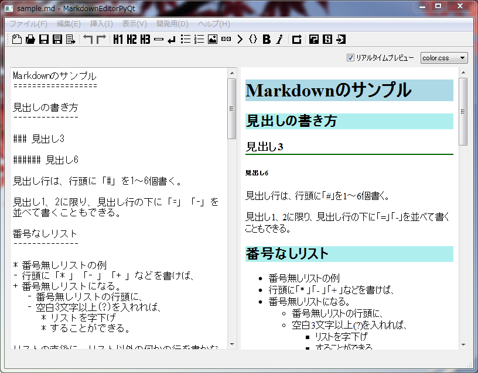

Python + PyQt4 + markdown2 で作った、Windows上で動作する、markdown記述用の簡易エディタです。

特に必要ありません。
distフォルダ内の markdowneditorpyqt.exe を実行してください。
Python + PyQt4 + markdown2 がインストールされている環境で、markdowneditorpyqt.pyw を実行します。
GPLです。
そもそもPyQtがGPLですので、PyQtを使ったプログラムは、GPLを継承しなければならないそうです。
改変や、exe化をして配布・公開する場合は、そのスクリプトソースも一緒に同梱すれば問題無いのでは…と思います。(誰でもソースを見れて、誰でも改変OKにすることが、GPLの目的のはずなので、ソースも同梱しておけば文句ないはず…。)
テキスト選択をしていない状態で挿入機能を呼べば、行頭や行末に記号を挿入したり、書き方の一例を挿入したりします。
テキスト選択してから挿入機能を呼ぶと、複数行に対して同じ記号を挿入したり、選択した単語を装飾用記号で挟むこともできます。
css\ 以下に、自分好みの .css ファイルを置けば、選べるようになります。
resource\templete.html を修正すれば、エクスポートするhtml内の記述を自分好みに変更できます。
resource\templete_markdown.csv を修正すれば、自分好みの markdown用記号を使えます。
py2exe、PythonWin(pywin32？)等がインストール済みの環境なら、py2exe を使ってexe化できます。その場合、setup.py の、
WIN32UI_DIR = r"C:\Python27\Lib\site-packages\pythonwin"
IMAGELIB_DIR = r"C:\Python27\Lib\site-packages\PyQt4\plugins\imageformats"
の2行を自分の環境に合わせて修正した上で、make_exe.bat を実行してください。distフォルダ以下に markdowneditorpyqt.exe その他が生成されます。
以下の環境で、生成した .exe が動作することを確認しました。
Qt Designer で mywebview.ui を開いて変更・保存後、cv_webview.bat を実行して、.ui ファイルと、.qrcファイルをPythonスクリプトに変換します。
cv_webview.bat の内容は以下の通りです。
pyrcc4 -o resources_rc.py resources.qrc
pyuic4 -o mywebview.py mywebview.ui
2012/10/05 ver. 0.0.7
2012/10/03 ver. 0.0.6
2012/10/02 ver. 0.0.5
2012/10/02 ver. 0.0.4
2012/10/01 ver. 0.0.3
2012/09/30 ver. 0.0.2
2012/09/29 ver. 0.0.1